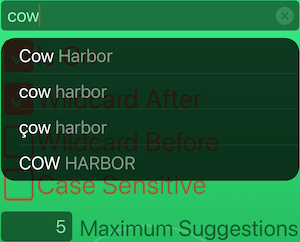
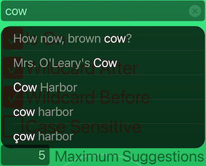
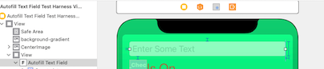
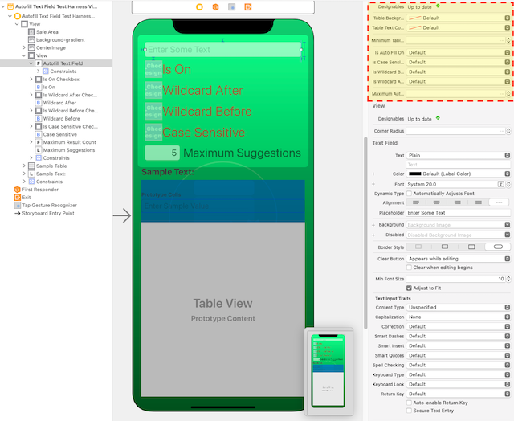
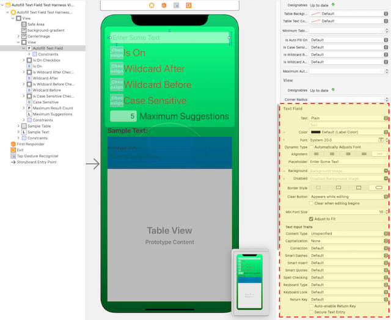

View on GitHub
View on GitHub
 RVS_AutofillTextField Reference
RVS_AutofillTextField Reference
RVS_AutofillTextField
NOTE
Here is a link to the GitHub repo for this project.
Here is a link to the technical documentation for this project.
INTRODUCTION
This is a standard UITextField, extended to provide an “autofill” dropdown menu, under the widget. This widget will provide matches, within an Array of Strings, which can be used as “autofill.” If one of the strings is selected by the user, then it is entered, in its entirety, into the text field.

Figure 1: The Widget’s Standard Display, with a “Begins With” Action
This is, by default, a simple, “one-way,” “greedy” match. It starts from the beginning, then moves forward, matching the characters entered into the text field. They must all match, but the match can be case/diacritical-independent (by default).
We can choose several modes of matching, so we can “wildcard” text before and/or after the string (or insist on an exact match).

Figure 2: The Widget’s Standard Display, with a “Contains” Action
The widget has been designed to allow a lot of customization, as well as a very simple way to provide the data to be searched. It also has the ability to be modified for more advanced data searching.
The user must actually select a table row. There is no “tab” autofill. This is for things like phones, where that doesn’t really make sense, and the application may have other plans for the return function.
WHAT PROBLEM DOES THIS SOLVE?
Entering text on phones isn’t easy. This helps to reduce the amount of text we actually need to enter.
Additionally, this can help us to “explore” datasets, by entering partial specifications. For example, if we are searching for users in a certain area, we might do a “triage” search, and create a subset of the main database of users, for the locality. These can be used as autofill suggestions, when looking for a user.
REQUIREMENTS
This is a Swift-only module. It is based on standard UIKit, for iOS/iPadOS.
There are no dependencies to use the widget, but there are a couple, if you will run the test harness:
IMPLEMENTATION
Where to Get the Package
You can get this package as a Swift Package Manager (SPM) package, or you can include it, using GitHub’s Carthage Package Manager. Finally, you can also directly access the GitHub repository, and simply include the single source file into your app.
The Swift Package Manager
In order to use the SPM, add the package to your project with its GitHub repo location:
git@github.com:RiftValleySoftware/RVS_AutofillTextField.git (SSH),
or
https://github.com/RiftValleySoftware/RVS_AutofillTextField.git (HTTPS).
Add the static RVS_AutofillTextField library to your project, and add the following import line to the top of the files that will use the widget:
import RVS_AutofillTextField
Carthage
Add the following line to your Cartfile:
github "RiftValleySoftware/RVS_AutofillTextField.git"
Then, run carthage update in the main project directory.
This will create a directory, called “Carthage”. Inside of that, will be another directory, called Checkins. Inside of that, will be RVS_AutofillTextField/Sources/RVS_AutofillTextField/RVS_AutofillTextField.swift.
I recommend that you include this file directly into your app, as opposed to building the library, and adding that. If you do this, there will be no need to import a module. Additionally, the IBDesignables stuff should work (these are the previews in the storyboard file).
Directly From GitHub
The above Carthage instructions will also basically apply to getting the file from GitHub. You can use the following GitHub URLs to access the repository:
git@github.com:RiftValleySoftware/RVS_AutofillTextField.git (SSH),
or
https://github.com/RiftValleySoftware/RVS_AutofillTextField.git (HTTPS).
You can add the repo as a Git Submodule, or even as a separate repo, that you use as a source for the physical file.
Get the same file, as indicated by Carthage, and add it to your project.
Customizing the widget
You instantiate the control, in exactly the same way that you would, an instance of UITextField. This can be done programmatically:
var myTextEntryWidget = RVS_AutofillTextField(frame: widgetFrame)
or using Interface Builder, and a storyboard/IB file:

Figure 3: Dragging In A Text Field Object
Start by dragging in a Text Field.

Figure 4: Setting the Class (and Possibly, the Module).
Convert the Class to an instance of RVS_AutofillTextField. You may need to also set the module (if not directly including the file).

Figure 5: The Widget, in Its New Home.
It will now show up as a standard Text Field.

Figure 6: The Custom Widget Parameters.
These are the custom parameters for the RVS_AutofillTextField type.

Figure 7: The Standard Text Field Parameters.
But we also have the traditional Text Field controls.
NOTE
The dropdown menu attaches to the main root screen view, so it “floats” above everything else. It is not modal. You can still access everything behind it.
Also, the dropdown only appears when the widget has focus, and contains text that matches the selections. Just giving it a list of strings is not enough to make the dropdown appear. It also has to have text in the field that will trigger a match in one or more of the strings.
Setting Up the Data Source
The widget won’t work, without a data source. You can’t add the data source via the storyboard. It needs to be done programmatically. This is because we did not want to force the user of this widget to have to start with an NSObject-based class (required to have the data source available via IB).
Once the widget has been installed/instantiated, it needs to be referenced by an internal property, like so:
/* ################################################################## */
/**
This is the CuT (Code Under Test). It is the test target instance of `RVS_AutofillTextField`.
*/
@IBOutlet weak var autofillTextField: RVS_AutofillTextField!
During the load setup, we should add the data source, like so:
/* ################################################################## */
/**
Called when the view hierarchy has been loaded. We use this to sync the CuT with the UX.
*/
override func viewDidLoad() {
super.viewDidLoad()
autofillTextField?.dataSource = self
The above examples were taken directly from the test harness project. In that project, the main View Controller is also the RVS_AutofillTextFieldDataSource-conformant Instance.
Conforming to the Data Source Protocol
The RVS_AutofillTextFieldDataSource protocol is really very simple.
It requires that an Array of a simple struct be supplied to the widget, which will then be used to provide the autofill “fuel.”
Each instance of the struct will have two properties:
The value Property
This is a simple String. It has the full string to be searched, and, possibly, offered to replace the contents of the text field.
The refCon Property
This allows you to attach an arbitrary “reference context” to the element. This is how you can attach things like references to other properties or objects. It is an optional Any? value, defaulted to nil, so there is no need to define it. It’s just there, for you.
This Array can be provided in one of two ways:
The Really Simple Way
By default, the data source protocol does a rather simple, naive search for matches. If we are happy with this, then all we need to do, is provide a property, like so:
/* ################################################################## */
/**
This is an Array of structs, that are the searchable data collection for the text field.
If this is empty, then no searches will return any results.
*/
var textDictionary: [RVS_AutofillTextFieldDataSourceType] {
testingTextDictionary.compactMap {
let currentStr = $0.trimmingCharacters(in: .whitespacesAndNewlines)
return !currentStr.isEmpty ? RVS_AutofillTextFieldDataSourceType(value: currentStr) : nil
}
}
The protocol default will take care of searching and matching for us.
The More Complex Way
If you want to have a way to optimize or otherwise filter/interpret the data being given to the widget, your data source can implement the getTextDictionaryFromThis(string inString: String, isCaseSensitive inIsCaseSensitive: Bool, isWildcardBefore inIsWildcardBefore: Bool, isWildcardAfter inIsWildcardAfter: Bool, maximumAutofillCount inMaximumAutofillCount: Int) -> [RVS_AutofillTextFieldDataSourceType] method
This is called by the widget repeatedly, with a String, containing the current text contents, and returns a filtered and searched Array of elements.
You must implement at least one of the above methods. If you don’t, then you just have a normal UITextField instance.
The Widget Options
The widget has a few optional fields that are available via the storyboard (Figure 6).
Customizing Behaviors
isAutoFillOnThis is a Bool value that is a “main circuit breaker” for the functionality. Default is on. If off, then the widget is just a regularUITextField.isCaseSensitiveIf this is on (default is off), then searches take case and diacriticals into account. If off, then the search ignores diacriticals and case.isWildcardBeforeIf this is on (default is off), then we ignore characters before the match, so the match can be further into the string. It does not need to start the string.isWildcardAfterIf this is on (default is on), then characters after the match are ignored.maximumAutofillCountThis is an integer value that designates the maximum number of results that show up in the table. If it is set to -1 (or any negative number), then there will be no limit, and the table could get quite large (and scroll). Default is 5.
If you are looking for an exact match, then turn off both wildcards. If you make it case-sensitive, then the string must match exactly.
If you are looking for a case-insensitive match at the start, just leave the defaults. If you are looking for an “ends with” match, then turn on the before wildcards, and turn off the after wildcards.
Customizing Appearance
You can specify different background and font colors. Default is standard system background, at a 75% opacity, and standard label colors, with a 50% opacity for unmatched text.
The Container View
By default, the dropdown attaches to the main UIWindow instance for the app, but you can provide your own context, by setting the containerView property.
If you leave it nil, the main window is used. The coordinates of the display are adjusted to work in the context view.
The Delegate
There is a RVS_AutofillTextFieldDelegate protocol. It has a simple method for detecting when the user selects a choice.
You assign the delegate by simply setting it to the UITextField.delegate property. It needs to be a UITextFieldDelegate
(which also means that the delegate must be an NSObject), even if it is not using any of the delegate functionality.
This is because we “piggyback” on the built-in delegate.
The delegate protocol, itself, does not extend UITextFieldDelegate, because it has a data type that won’t necessarily work with Objective-C.
LICENSE
MIT License
Copyright © 2021 Rift Valley Software, Inc.
Permission is hereby granted, free of charge, to any person obtaining a copy of this software and associated documentation files (the “Software”), to deal in the Software without restriction, including without limitation the rights to use, copy, modify, merge, publish, distribute, sublicense, and/or sell copies of the Software, and to permit persons to whom the Software is furnished to do so, subject to the following conditions:
The above copyright notice and this permission notice shall be included in all copies or substantial portions of the Software.
THE SOFTWARE IS PROVIDED “AS IS”, WITHOUT WARRANTY OF ANY KIND, EXPRESS OR IMPLIED, INCLUDING BUT NOT LIMITED TO THE WARRANTIES OF MERCHANTABILITY, FITNESS FOR A PARTICULAR PURPOSE AND NONINFRINGEMENT. IN NO EVENT SHALL THE AUTHORS OR COPYRIGHT HOLDERS BE LIABLE FOR ANY CLAIM, DAMAGES OR OTHER LIABILITY, WHETHER IN AN ACTION OF CONTRACT, TORT OR OTHERWISE, ARISING FROM, OUT OF OR IN CONNECTION WITH THE SOFTWARE OR THE USE OR OTHER DEALINGS IN THE SOFTWARE.